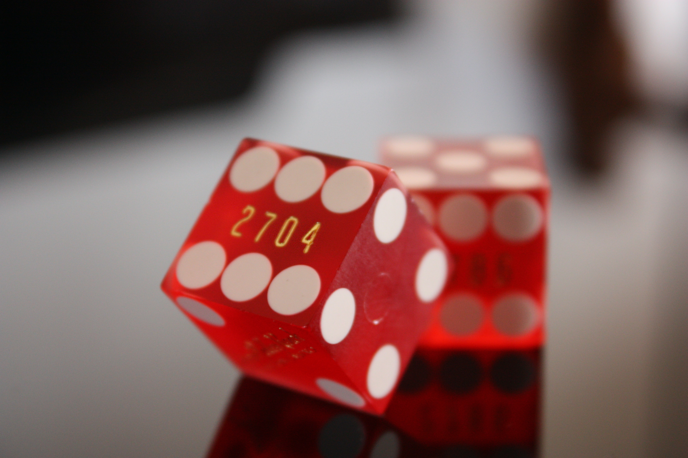

보드게임은 게임판, 카드, 주사위, 나무토막, 미플 등의 온갖 물리적인 도구를 동원해서 이루어지는 게임을 말한다. 
원래는 그냥 게임이라고 했지만, 컴퓨터를 사용하는 전자오락과의 구분을 위해 '보드게임'이라는 명칭이 붙게 되었다. 플레잉 카드나 화투 등의 카드게임이나 보글, 크랩스, 백개먼같은 주사위게임도 넓은 의미에서는 보드게임이라고 볼 수 있다. 사실 여러 종류의 기물을 복합적으로 이용하는 게임도 많고, 그 중 한두개를 안 쓰거나 한두개만 쓴다고 해서 딱히 게임 장르가 달라진다고 보기는 힘들다. 따라서 이러한 류의 게임을 통틀어서 테이블탑 게임이라고 부르기도 한다.
또 윷놀이, 체스, 장기, 쇼기, 브리지, 포커, 바둑, 고누, 오목, 화투, 마작, 알까기 역시 고전 보드게임이라고 볼 수 있다.
역사적으로는 고대 이집트의 '세네트'가 최초의 보드 게임 중 하나로 여겨진다. 무려 고대 이집트 왕조가 시작되기도 전인 기원전 3500년경에 그 모습을 처음 드러내며, 약 기원전 3100년의 무덤에도 상형문자의 형태로 기록되어있다. 이 게임은 저승에 가기 위해 반드시 연마해야 하는 필수코스로 여겨지기도 했다. 저승에 가는 배를 타기 위해선, 저승의 뱃사공과 세네트 게임을 해서 그를 이겨야 했기 때문... 그 때문에 고대 이집트의 분묘벽화에는 세네트를 두는 고인의 모습을 그린것이 많다. 세네트는 윷처럼 생긴 막대기 4개를 굴려서 나오는 눈만큼 말을 전진시키는 놀이로 오늘날의 백개먼과 매우 비슷한 놀이다.
세네트와 비슷하게 최초의 보드게임 중 하나로 알려져 있는 '우르의 게임'은 기원전 2600년의 메소포타미아 문명까지 그 역사가 거슬러 올라간다.
2000년대, 아니 정확하게는 현재의 보드게임은 카탄 등장 이전과 이후로 나뉜다. 카탄의 등장은 보드게임 시장을 이전과 비교할 수 없을 정도로 규모를 키웠고, 동시에 이전에 대세를 자랑하던 미국 게임들이 한풀 꺾이는 계기가 되었다. 카탄 이후에 독일이 특히 보드게임으로 유명하며, 흔히 보드게임방에서 하게 되는 게임 중 절반 가까이는 독일제 게임의 영어 번역판이다. 이러한 까닭에 독일식 보드게임은 유로게임 이라는 이름으로 불리우고 있다... 특히 세계 최고의 보드게임쇼로 꼽히는 Spiel(Internationale Spieltage)이 독일 에센에서 열린다. 또한 저명한 보드게임상인 슈필 데스 야레스(Spiel des Jahres, 올해의 게임)도 있다. 홈페이지. Spiel이라는 단어 자체는 직역하면 놀이라는 뜻.
TRPG나 유희왕과 같은 TCG도 일단은 보드 게임이지만 시간이 흘러 여러 규칙이 생기면서 현재는 테이블과 주사위를 제외하고는 다른 보드 게임과 구분되어 하위 분야로 구분되었다. 워해머나 Warhammer 40,000 같은 게임도 같은 맥락으로 미니어처 게임으로 분류된다. 턴제가 많다는 점에서 SRPG랑 비슷한 느낌이 나긴 한다.
보드라이프